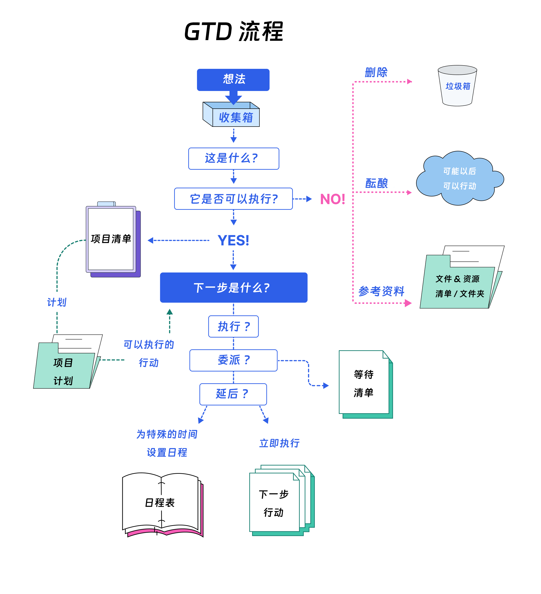
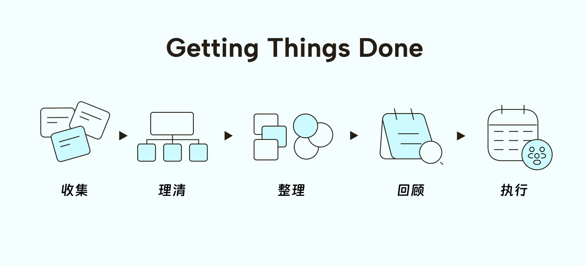
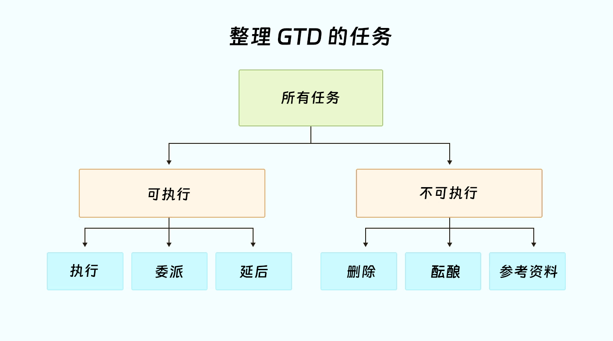

你有没有过这样的经历：大脑里同时转着十几个想法，每个都在争夺你的注意力，结果什么都做不好？这种心理负担不仅让人焦虑，更会严重拖累工作效率。
这正是效率专家大卫·艾伦（David Allen）的所提出的 GTD（“Getting Things Done”，意为“把事情搞定”）方法要解决的核心问题。经过数十年的实践验证，这套方法论已经帮助数百万人重新掌控了工作节奏。

为什么选择 GTD ？
GTD的核心理念极其简单：你的大脑是用来产生想法的，而不是存储想法的。
想象一下，你的大脑就像一块白板。如果上面写满了各种待办事项以及“千万别忘了”的标签，哪里还有空间用来构思新的想法或解决方案？GTD 的价值在于，通过建立一个你完全可信赖的外部系统，将所有事务都移出大脑，让你的大脑从繁重的记忆负担中解脱出来。
这种转变带来的好处是立竿见影的：消除犹豫不决、减少认知负荷、集中精力处理要事。
GTD 的关键工具
建立 GTD 系统需要以下几个关键工具，这些工具可以用任务管理软件、纸质笔记本，甚至电脑文件夹等任何你喜欢的方式来实现，关键在于选择你最容易坚持使用的方式。
-
收集箱：这是你所有任务、想法、笔记的临时存放点。无论是纸质的笔记本还是电子应用程序，你需要一个可靠的工具来捕获一切，确保没有任何内容遗漏。
-
下一步行动清单：用于记录那些推动任务前进的、具体的、可见的物理步骤。
-
项目清单：任何需要超过一个步骤才能完成的成果，都算作一个“项目”。这个清单用来追踪所有这些多步骤任务的进展。
-
等待清单：记录那些已经委派给他人或需要等待外部条件才能继续推进的任务。
-
日程表：只存放有明确日期和时间要求的“硬性”任务、约会和承诺。
-
某天/也许清单：存放那些你可能想做，但不是现在，也没有做出承诺的事项。例如“学一门新语言”或“计划一次长途旅行”。
-
参考资料：存放不需执行但有查阅价值的信息，例如报告、文章、手册等。
GTD 的 5 个步骤
GTD 通过五个连贯的步骤来构建一个高效、无压力的工作流程：

步骤一：收集（Capture）
目标：将所有吸引你注意力的事情（无论大小）从大脑中清空，记录到收集箱中。
操作要点：
-
选择最合适的工具作为收集箱（例如笔记本、电子文档、应用程序等）。
-
无条件记录任何想法，暂时不做任何判断或整理。
-
确保收集箱工具能够随时随地使用。
-
尽量减少收集箱的数量（最好一两个），避免信息分散。
最佳实践：养成习惯，当想法或任务出现时立即记录，而不是依赖记忆。
步骤二：理清（Clarify）
目标：定期处理收集箱中的每一项内容，明确其含义并决定如何处理。这是 GTD 的核心决策环节。
对于收集箱里的每一项，依次问自己以下问题：
-
这是什么？
-
它是否可以执行？
-
否：如果它无法执行，你有三个选择：
-
垃圾：没有价值，直接删除。
-
参考资料：未来可能有价值，存入参考资料系统。
-
某天/也许：现在不想做，但未来可能想做，放入某天/也许清单。
-
-
是：如果它可以执行，那么下一步是什么？
-
2 分钟原则：如果这个行动能在 2 分钟内完成，立即就做。这是最快的处理方式。
-
委派：如果这件事应该由别人来做，把它委派出去，然后将它记录到你的等待清单中，以便后续跟踪。
-
延后：如果这件事需要你自己稍后处理（且耗时超过2分钟），则将其放入相应的清单中。
-
-
-
它是否是一个“项目”？
- 如果完成这件事需要多个步骤，那么就在你的项目清单里记录下这个目标，并将它的下一步行动放入下一步行动清单中。
步骤三：整理（Organize）

目标：将“理清”步骤中处理过的内容，分门别类地存放到各个正确的清单中。
主要清单系统：
-
下一步行动清单：存放所有下一步要做的具体行动。最好按情境（见下文）分类，如“#办公室”、“#电脑前”、“#外出”。
-
项目清单：概览所有需要多个步骤才能完成的任务，并确保每个项目都有一个对应的“下一步行动”。
-
等待清单：跟踪所有已委派给他人的任务，并注明委派日期和对象。
-
某天/也许清单：存放所有暂时不需行动但将来可能要做的想法或项目。
-
日程表：只存放有特定日期或时间的任务（如会议、约会、截止日期）。
-
参考资料：存放所有非行动性但有用的支持信息。
步骤四：回顾（Reflect）
目标：定期检视和更新整个系统，确保其完整和可靠，让你对它保持信心。
核心是每周回顾 (Weekly Review)：
-
清空所有收集箱。
-
回顾下一步行动清单和日程表。
-
检查项目清单，确保每个项目都有明确的下一步行动，并回顾项目进展。
-
更新等待清单，跟进需要推动的事项。
-
浏览某天/也许清单，看是否有项目可以启动。
研究表明，缺乏定期的回顾是导致 GTD 系统失效的首要原因。
步骤五：执行（Engage）
目标：在清空大脑、整理好任务后，你可以基于当下的情况，充满信心地选择并执行最合适的行动。
执行的四层标准：
-
情境 (Context)：你现在在哪里，有什么工具？（例如，在办公室就处理“#办公室”的任务）
-
可用时间 (Time Available)：你有多少时间？（5分钟还是1小时？）
-
精力水平 (Energy Available)：你现在的精神状态如何？（是精力充沛还是疲惫不堪？）
-
优先级 (Priority)：综合以上三点后，哪项任务是最重要的？
情境标签
情境标签是你为“下一步行动”添加的分类，用来说明完成该任务所需的地点、工具或人物。这能让你在特定情境下，快速筛选出可以执行的任务。
| 任务 | 情景标签 |
|---|---|
| 购买猫粮。 | #商店 |
| 制作去新加坡的旅行计划。 | #计算机 #家中 |
| 对陌生人微笑 | #任何地方 |
你需要多少情境标签取决于你的生活和工作方式。重要的是能够一目了然地根据你所处的位置和拥有的设备，评估可以采取的下一步行动。
每周回顾
每周回顾是 GTD 成功的基石。这个至少花费 30 分钟的仪式，能确保你的系统始终保持最新状态，防止任何事项被遗忘。

回顾清单建议：
-
检查日程表中过去和未来的事件。
-
确保每个项目都有明确的下一步行动。
-
审视你的下一步行动清单，上面的每一项都是你下一周想做或必须做的事吗？如果不是，就把它移到某天/也许清单，或者如果你觉得自己永远不会做这件事——就彻底删除它。
-
跟踪等待清单中委派任务的进展，判断是否需要发出提醒。
-
浏览某天/也许清单，看看是否有项目或行动已经成熟，可以转移到项目清单或下一步行动清单中了。
强化工具
两个额外的工具可以让你的 GTD 系统更加完善：
-
提醒文件夹 (Tickler File) 这是一个由 43 个文件夹（12 个月份+31 个日期）组成的物理或电子系统。你可以将需要在未来特定某天处理的物品（如演出门票、会议议程、待支付账单）放入对应日期的文件夹，当天打开查看即可。它用于处理那些“在X月Y日提醒我”但又不适合放入日程表的事务。
-
阅读/回顾文件夹 (Read/Review Folder) 这是一个专门存放你打算阅读的文档、文章或报告的物理或电子文件夹。当你有时（例如排队、通勤时），就可以打开这个文件夹，将零碎时间变成高效的学习时光。
总结
GTD不仅仅是一个任务管理系统——它是一种清空大脑、减少压力、高效完成工作的生活方式。通过建立可信赖的收集系统、持续的理清和整理工作，以及定期的回顾反思，你为高效思考和有目的的行动创造了空间。
从今天开始，一步一步地实施这个系统。很快，你就会发现自己能够轻松管理各种任务，专注于真正重要的事情上。成功的关键不在于完美，而在于持续的实践和改进。
附录
参考链接：
如果您喜欢此博客或觉得它对您有用，则欢迎对此发表评论。 也欢迎您分享此博客，以便更多人可以参与。 如果博客中使用的图像侵犯了您的版权，请与我联系以将其删除。 谢谢 ！